Histograms & KDE Plots
Master Numerical Distributions: Bins, Bandwidth Smoothing, Density vs. Frequency, Skewness, Multimodal Peaks, and Boundary Constraints with histplot() and kdeplot()
📊 01. What is a Data Distribution? (Beyond Single Summary Numbers)
Imagine kijiye ek college administration ko 500 students ke semester exam marks ka evaluation karna hai. HOD ne kaha: "Hamari class ka Average (Mean) Marks 72.6 hai." Sunne me yeh number kaafi accha lagta hai, lekin ek single summary number pure sach ko reveal nahi kar sakta:
- Kya lagbhag sabhi students 70–75 ke beech score kar rahe hain?
- Ya fir aadhe students 95 score kar rahe hain aur baaki aadhe 40 par fail ho rahe hain?
- Kya marks ka distribution perfectly balanced hai, ya lower/higher marks ki taraf lamba tail hai?
- Kya class me do alag-alag ability groups (cohorts) present hain?
Yahi reason hai ki statistics aur data science me hum Data Distribution study karte hain. Distribution ka matlab hota hai: "Observations numerical range ke andar kahan-kahan spread hain aur unki frequency kahan zyada concentrated hai."
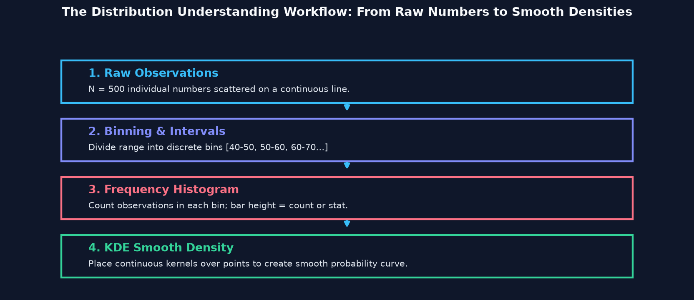
Sochiye aapke paas 500 marbles (data points) hain jo zameen par bikhre hue hain. Agar aap zameen par 10 boxes (bins) rakh kar har box me girne wale marbles ginte hain, toh banta hai Histogram. Aur agar aap unhi marbles ke upar ek smooth sheet ya ret (sand) daal kar ek continuous curve shape banate hain, toh banta hai KDE (Kernel Density Estimate)!
Key Properties of Any Numerical Distribution
| Distribution Property | Statistical Meaning | Seaborn Visual Manifestation |
|---|---|---|
| Center (Central Tendency) | Data ka typical ya middle value (Mean, Median, Mode). | Histogram ka main center mass ya KDE peak ka X-coordinate. |
| Spread (Dispersion) | Observations kitni broad ya tightly grouped hain (Standard Deviation, IQR). | Histogram ki total base width across the X-axis. |
| Peaks (Modality) | High density concentration regions (Unimodal, Bimodal, Multimodal). | Histogram me tallest bars ya KDE me curved crests. |
| Tails (Skewness) | Extreme low ya extreme high values ka drop-off slope. | Right tail (positive skew) ya Left tail (negative skew). |
📊 02. Understanding Histograms: Bins, Intervals & Frequency
Ek Histogram continuous numerical variable ko graphical format me represent karne ka sabse standard visual tool hai. Histogram continuous data range ko consecutive, non-overlapping intervals me divide karta hai jinhe Bins kaha jata hai:
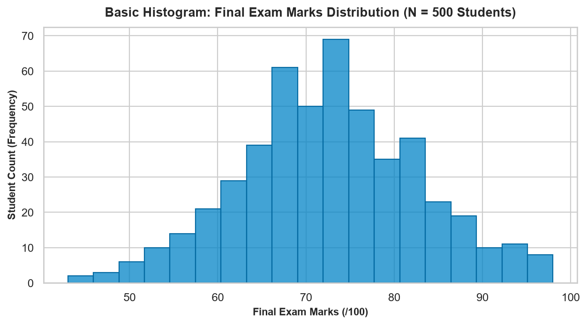
Histogram vs. Regular Bar Chart (Crucial Distinction)
| Feature | Histogram (sns.histplot) |
Categorical Bar Chart (sns.barplot) |
|---|---|---|
| Data Nature | Continuous Quantitative numbers (e.g. Marks, Price, Age, Salary). | Discrete Nominal categories (e.g. Department, City, Payment Type). |
| X-Axis Intervals | Ordered, numerical continuous scale with mathematical bin edges. | Discrete arbitrary category names (order can be freely swapped). |
| Space Between Bars | Bars touch each other (gap = 0) to represent continuum of values. | Distinct gaps exist between bars to signify independent categories. |
| Bar Width Meaning | Bar width mathematical interval size represent karti hai (e.g. 5 marks). | Bar width purely aesthetic hoti hai without quantitative meaning. |
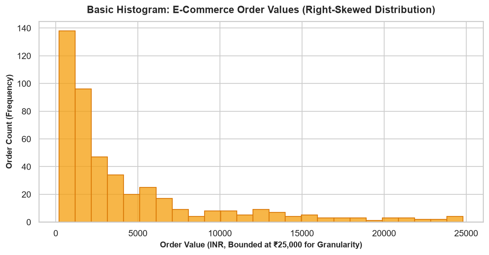
import seaborn as sns
import matplotlib.pyplot as plt
import pandas as pd
# Load verified college performance dataset
df_college = pd.read_csv("scratch/seaborn_topic5_data/college_performance.csv")
sns.set_theme(style="whitegrid")
fig, ax = plt.subplots(figsize=(7.5, 4), dpi=140)
# Standard histogram call
sns.histplot(data=df_college, x="exam_marks", color="#0284c7", ax=ax)
ax.set_title("Final Exam Marks Distribution (N = 500)", fontweight="bold")
ax.set_xlabel("Exam Marks (/100)")
ax.set_ylabel("Student Frequency Count")
plt.tight_layout()
plt.show()
print(f"Exam Marks Mean: {df_college['exam_marks'].mean():.2f}")
print(f"Exam Marks Median: {df_college['exam_marks'].median():.2f}")⚙ 03. Mastering sns.histplot() Parameters: The Complete Toolkit
Seaborn 0.11+ me sns.histplot() legacy sns.distplot() ko officially replace karta hai. Yeh modern function continuous, discrete, aur categorical data ke liye unified, high-performance distribution plotting provide karta hai:
| Parameter | Type & Default | What It Controls | When to Use It |
|---|---|---|---|
data |
pd.DataFrame |
Dataset containing the plotting variables. | Always passed in tidy tabular workflows. |
x / y |
str (column name) |
Variable to compute distribution over (x for vertical bars, y for horizontal bars). |
Pass column name as string. |
bins |
int / str = "auto" |
Total number of discrete intervals or auto-estimator rule (e.g. "fd", "sturges"). |
When you need precise control over bin granularity. |
binwidth |
float / int |
Physical width of each bin interval in data units (e.g. binwidth=5 marks). |
When bin intervals must match meaningful domain steps. |
binrange |
tuple (min, max) |
Lowest and highest bin edges, ignoring data outside range. | Filtering out extreme outliers without mutating dataframe. |
stat |
str = "count" |
Aggregate statistic on Y-axis: "count", "frequency", "probability", "percent", "density". |
Normalizing datasets of different sample sizes. |
kde |
bool = False |
Overlays a smooth continuous Kernel Density Estimate curve. | Evaluating underlying continuous probability shape. |
element |
str = "bars" |
Visual representation: "bars", "step", or "poly". |
When comparing multiple overlapping categories cleanly. |
multiple |
str = "layer" |
Group stacking behavior: "layer", "dodge", "stack", or "fill". |
When hue is specified for categorical breakdown. |
discrete |
bool = False |
Centers bins directly on integer values without sub-bin gaps. | Integer data (e.g. dice rolls, order quantities, survey ratings). |
cumulative |
bool = False |
Plots running cumulative sum of bins (CDF — Cumulative Distribution Function). | Answering "What % of students scored ≤ X marks?". |
Example 3.1 — Advanced histplot() with Multiple Controls
import seaborn as sns
import matplotlib.pyplot as plt
import pandas as pd
df_college = pd.read_csv("scratch/seaborn_topic5_data/college_performance.csv")
sns.set_theme(style="whitegrid")
fig, ax = plt.subplots(figsize=(8, 4.2), dpi=140)
# Combining binwidth, kde overlay, and probability scaling
sns.histplot(
data=df_college,
x="exam_marks",
binwidth=5,
stat="probability",
kde=True,
color="#0284c7",
edgecolor="#0369a1",
ax=ax
)
ax.set_title("Marks Probability Distribution (binwidth=5 Marks + KDE)", fontweight="bold")
ax.set_xlabel("Final Exam Marks (/100)")
ax.set_ylabel("Relative Probability (Sum = 1.0)")
plt.tight_layout()
plt.show()
print("Calculated Min Marks:", df_college["exam_marks"].min())
print("Calculated Max Marks:", df_college["exam_marks"].max())📏 04. Understanding Bins, Bin Width & Bin Range (The Goldilocks Rule)
Histogram ka sabse critical decision hota hai: Bin Selection. Bins na sirf bars ki count decide karte hain, balki woh chart ke apparent statistical shape ko completely alter kar sakte hain bina underlying data ko touch kiye:
Visualizing the Impact of Bin Sizing
Aaiye dekhte hain ki jab hum same exam marks dataset par 5, 10, aur 20 bins apply karte hain toh visual distribution kaise transform hoti hai:
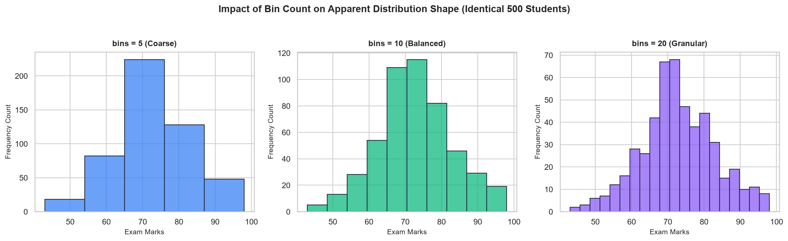
bins=5 — Extremely broad bins oversimplify the distribution and hide subtle structural patterns.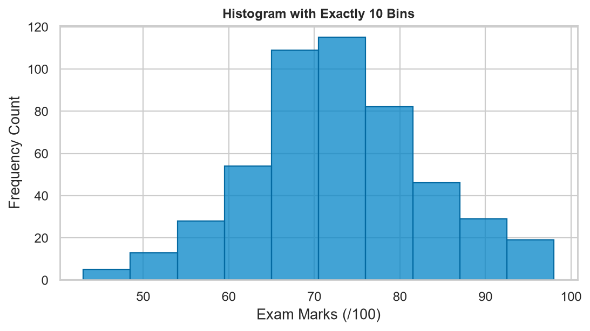
bins=10 — Clear, readable view showing a balanced approximation of student performance.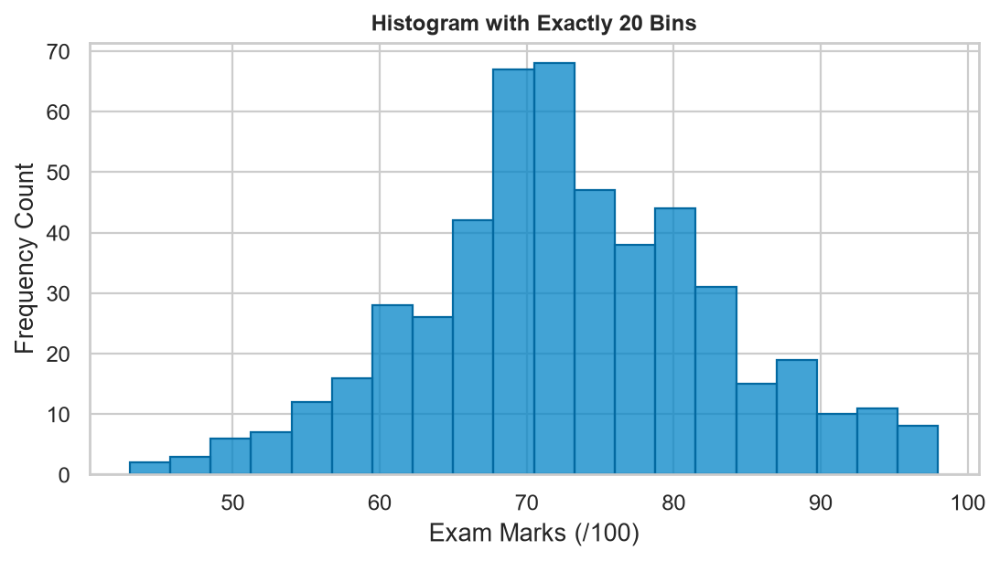
bins=20 — Fine-grained intervals revealing exact mode concentration around 72 marks.The 3 Golden Rules of Bin Selection
- Too Few Bins (Under-fitting): Agar aapne sirf 3 ya 5 bins use kiye, toh real-world distribution ka true shape (jaise subtle bimodal peaks ya skewness) ek single massive block ke andar chup jata hai.
- Too Many Bins (Over-fitting): Agar aapne 50 ya 100 bins use kiye, toh bars bohot narrow ho jaate hain aur random sampling noise ki wajah se empty slots aur spiky jagged towers create ho jaate hain.
- The Goldilocks Sweet Spot: Chhote datasets (N < 500) ke liye 10–15 bins ideal hote hain; bade datasets (N > 5000) ke liye 30–50 bins meaningful patterns reveal karte hain.
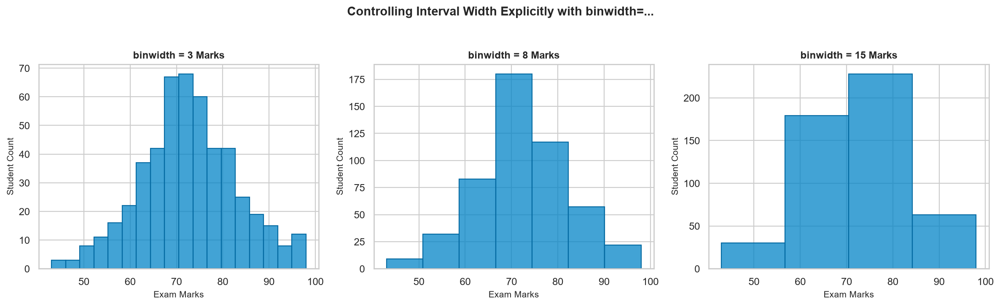
binwidth=... — Using domain-driven intervals (3 marks vs. 8 marks vs. 15 marks).Agar aapko mathematical domain reasoning chahiye (e.g. "Har bar exactly ₹500 ya 5 marks ka interval represent kare"), toh binwidth=5 use karein. Agar aapko screen layout ke hisaab se fixed number of bars chahiye, toh bins=15 specify karein.
📈 05. Statistical Scaling: Count, Frequency, Probability & Density
Seaborn ka stat=... parameter Y-axis ke mathematical scaling mode ko control karta hai. Beginners aksar count aur density ke beech confuse ho jaate hain. Aaiye inke rigorous differences ko decode karein:
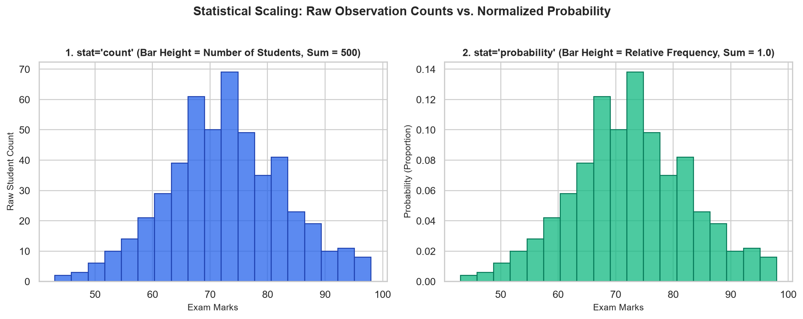
stat="count" (Raw Observations, Sum = 500) vs. stat="probability" (Relative Proportions, Sum = 1.0).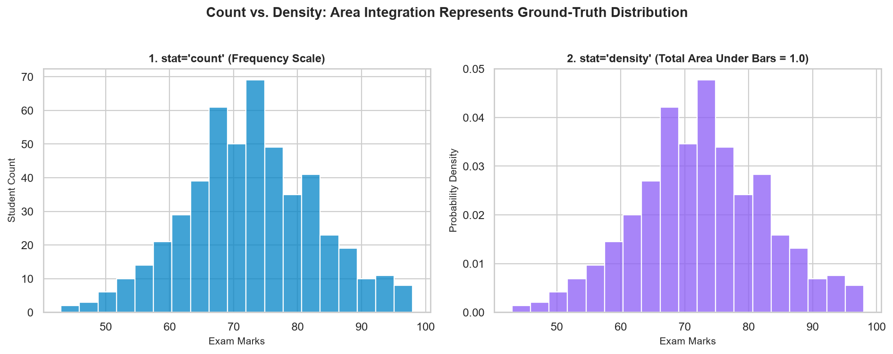
stat="count" vs. stat="density" — In density histograms, the total area under all bars integrated together equals 1.0.Comparing stat Options
| Option | Formula / Meaning | Y-Axis Interpretation | Summing Behavior |
|---|---|---|---|
stat="count" |
ni (Number of observations in bin i). | Raw integer frequency count. | Sum of bar heights = Total sample size N. |
stat="probability" |
P(i) = ni / N (Proportion in bin i). | Relative proportion / probability (0.0 to 1.0). | Sum of bar heights = 1.0 (100%). |
stat="percent" |
% = (ni / N) × 100. | Percentage of observations in each bin. | Sum of bar heights = 100%. |
stat="density" |
Di = ni / (N × binwidthi). | Probability density per unit of X. | Total Area (∑ Height × Width) = 1.0. |
Density histogram me kisi single bar ki height probability nahi hoti! Bar height Density hoti hai, aur probability bar ka Area (Height × Width) hota hai. Density value 1.0 se badi bhi ho sakti hai agar bin width bohot choti (< 1) ho!
👥 06. Grouped Histograms with hue (layer, dodge, stack, fill)
Real-world datasets me hume aksar do ya zyada groups ke distributions ko directly compare karna hota hai (jaise Computer Science vs. Mechanical engineering students ke marks, ya UPI vs. Credit Card order values). Seaborn me hue parameter distribute karta hai:
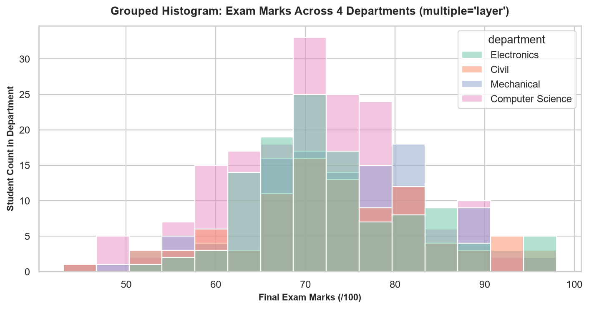
hue="department" and multiple="layer".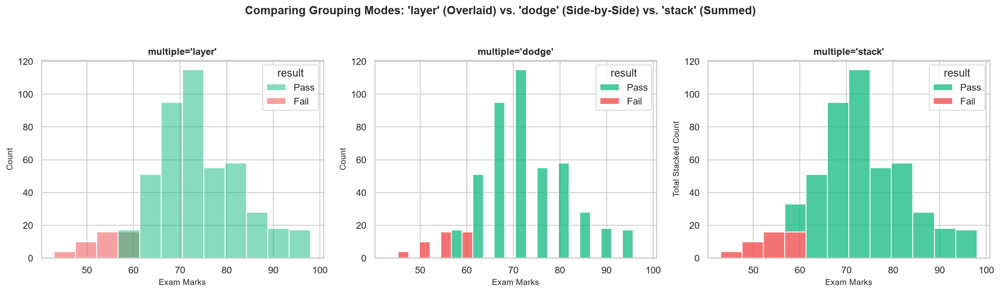
multiple="layer" (Transparent Overlaid) vs. multiple="dodge" (Side-by-Side) vs. multiple="stack" (Cumulative Total).The 4 Grouping Modes of multiple=...
| Option | Visual Layout | When to Choose | Key Considerations |
|---|---|---|---|
multiple="layer" |
Bars overlap at the exact same X-coordinates. | 2 to 3 categories with distinct centers. | Always set alpha=0.4 to prevent foreground bars from hiding background bars. |
multiple="dodge" |
Bars stand side-by-side inside each bin interval. | Comparing exact frequencies side-by-side. | Bins become crowded if more than 3 categories are dodged. |
multiple="stack" |
Bars are stacked vertically on top of each other. | Displaying overall class total + subcategory contribution. | Subcategory shapes become distorted because they don't share a flat baseline. |
multiple="fill" |
Bars are normalized to 100% height across each bin. | Analyzing probability ratios (e.g. "What % failed in bin 40-50?"). | Raw observation sample counts are completely hidden. |
import seaborn as sns
import matplotlib.pyplot as plt
import pandas as pd
df_college = pd.read_csv("scratch/seaborn_topic5_data/college_performance.csv")
sns.set_theme(style="whitegrid")
fig, ax = plt.subplots(figsize=(8.5, 4.2), dpi=140)
# Dodged comparison between Pass and Fail students
sns.histplot(
data=df_college,
x="study_hours",
hue="result",
multiple="dodge",
palette={"Pass": "#10b981", "Fail": "#ef4444"},
bins=8,
shrink=0.85,
ax=ax
)
ax.set_title("Study Hours Distribution by Academic Result (multiple='dodge')", fontweight="bold")
ax.set_xlabel("Weekly Study Hours")
ax.set_ylabel("Student Count")
plt.tight_layout()
plt.show()
print("Total Pass Students:", (df_college["result"] == "Pass").sum())
print("Total Fail Students:", (df_college["result"] == "Fail").sum())🔮 07. What is KDE? (Kernel Density Estimation Intuition & Curve Anatomy)
Jab hum histogram banate hain, toh bin boundaries ke selection ki wajah se artificial step-like edges bante hain. Kernel Density Estimation (KDE) ek non-parametric statistical technique hai jo discrete observations ko ek smooth, continuous probability density function me transform kar deti hai:
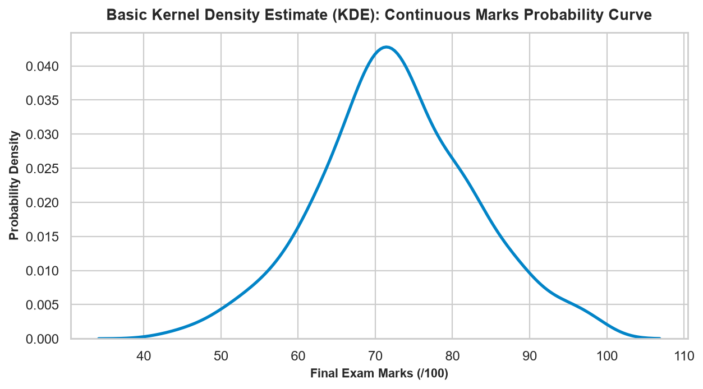
How Does KDE Actually Work? (The Gentle Intuition)
- Place a "Kernel" on Each Point: Har data point ke upar ek chhota continuous bell-curve (usually a Gaussian/Normal kernel) place kiya jata hai.
- Sum Up All Kernels: Jab sabhi 500 chote bell curves ko mathematical sum kiya jata hai, toh jahan data points dense hote hain wahan curves aapas me jud kar ek Uncha Peak bana dete hain. Jahan data sparse hota hai, wahan Low Flat Tail banta hai.
- Normalize Area: Pure smooth curve ke neeche ka total mathematical area exactly 1.0 par scale kiya jata hai.
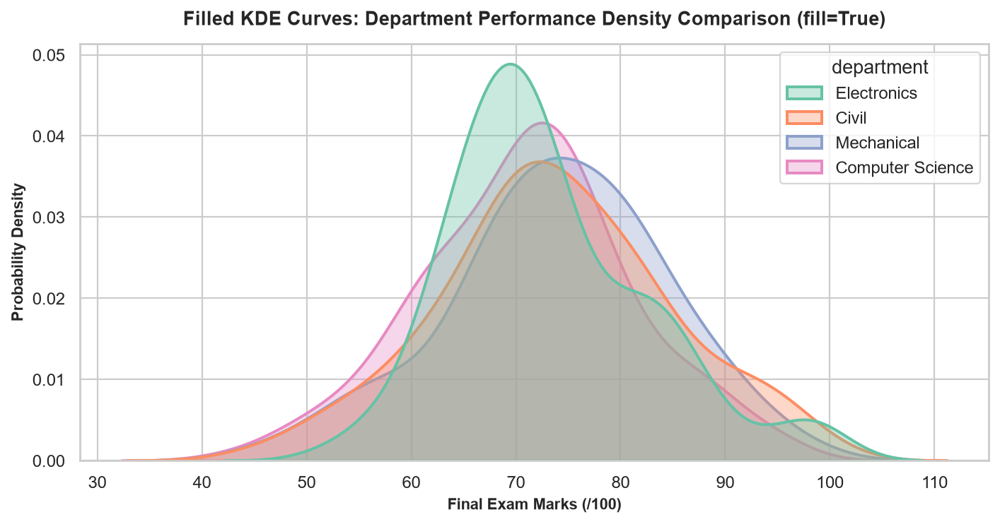
fill=True and alpha=0.35 — Elegant, uncluttered comparison of overlapping cohort densities.KDE plot ke Y-axis par likha 0.035 yeh nahi batata ki 35 students hain! Yeh Probability Density (f(x)) hai. Continuous distribution me kisi single exact point (e.g. exactly 72.000 marks) par probability technically zero hoti hai; probability hamesha do points ke beech ka Area under the Curve hoti hai!
🎪 08. Mastering sns.kdeplot() Parameters: Precision Curve Control
Seaborn ka standalone sns.kdeplot() function smooth density estimation curves draw karne ke liye surgical controls provide karta hai:
| Parameter | Type & Default | Visual Effect & Functionality |
|---|---|---|
data |
pd.DataFrame |
Dataset object. |
x / y |
str |
Variables to estimate (1D for curve, both x and y for 2D bivariate contours). |
hue |
str |
Categorical grouping variable for multi-curve overlays. |
fill |
bool = False |
Area under the curve ko translucent color se fill karta hai. |
bw_adjust |
float = 1.0 |
Bandwidth multiplier factor (< 1 = more jagged/noisy, > 1 = smoother). |
cut |
float = 3 |
Factor determining how far the curve extends beyond data extremes in bandwidth units. |
clip |
tuple (min, max) |
Hard boundary constraints (e.g. clip=(0, 100) for percentage marks). |
common_norm |
bool = True |
If False, each category curve normalizes independently to area 1.0. |
cumulative |
bool = False |
Plots the cumulative distribution function (CDF) ranging from 0.0 to 1.0. |
import seaborn as sns
import matplotlib.pyplot as plt
import pandas as pd
df_college = pd.read_csv("scratch/seaborn_topic5_data/college_performance.csv")
sns.set_theme(style="whitegrid")
fig, ax = plt.subplots(figsize=(8, 4), dpi=140)
# Constrain estimation strictly to [0, 100] marks boundary
sns.kdeplot(
data=df_college,
x="exam_marks",
hue="result",
palette={"Pass": "#10b981", "Fail": "#ef4444"},
fill=True,
common_norm=False,
alpha=0.35,
clip=(0.0, 100.0),
linewidth=2.0,
ax=ax
)
ax.set_title("Bounded Density Curves: Pass vs. Fail (clip=(0, 100))", fontweight="bold")
ax.set_xlabel("Exam Marks (/100)")
ax.set_ylabel("Independent Density")
plt.tight_layout()
plt.show()
print("Exam Marks Standard Deviation:", df_college["exam_marks"].std())🎮 09. KDE Bandwidth & Smoothing: The bw_adjust Trade-off
Jaise histogram me bins count change karne se visual intervals change hote hain, waise hi KDE me Bandwidth decide karta hai ki curve kitna tight ya kitna smooth hoga. Bandwidth individual kernel bell curves ki standard deviation hoti hai:
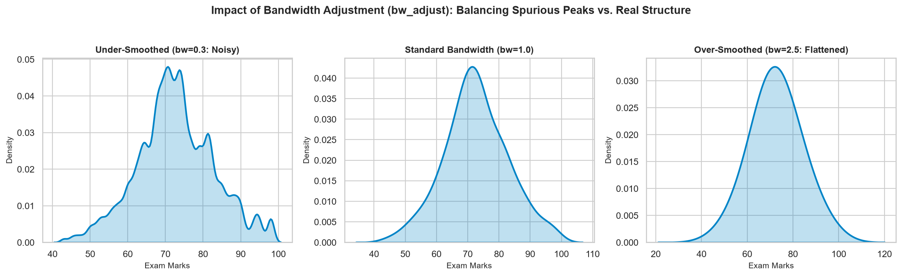
bw_adjust) on Identical Data — Under-smoothed (0.3: Spurious Noise Peaks) vs. Standard (1.0: Balanced) vs. Over-smoothed (2.5: Erased Real Structure).The Two Dangers of Extreme Bandwidth
- Under-smoothing (
bw_adjust < 0.5): Bandwidth bohot choti hone par har individual sample point ek alag mini-peak bana deta hai. Chart jagged dikhne lagta hai aur viewer spurious random fluctuations ko "real data trends" samajh baith-ta hai. - Over-smoothing (
bw_adjust > 2.0): Bandwidth bohot badi hone par curve itna flat aur round ho jata hai ki real-world bimodal cohorts (jaise Fail vs Pass groups) completely merge hokar gayab ho jaate hain. - Default Setting (
bw_adjust=1.0): Seaborn by default Scott's rule ya Silverman's rule of thumb calculate karta hai jo Gaussian data ke liye mathematically optimal balance provide karta hai.
Beginners aksar sochte hain ki bw_adjust=2.0 lagane se chart "clean aur modern" lag raha hai toh woh zyada accurate hai. Galat! Excessive smoothing data ki intrinsic variance ko destroy karti hai aur tail density ko artificially inflate kar deti hai.
⚖ 10. Histogram versus KDE: Head-to-Head Comparison
Aapko kab Histogram use karna chahiye aur kab KDE? Dono ke apne unique statistical advantages aur limitations hain:
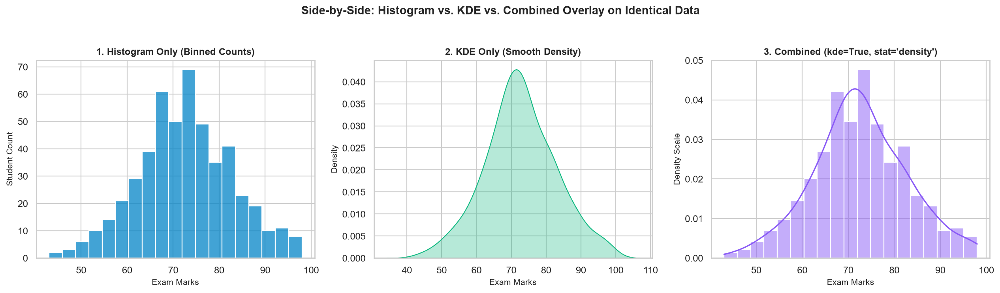
kde=True).Comprehensive Comparison Matrix
| Comparison Dimension | Histogram (sns.histplot) |
KDE Plot (sns.kdeplot) |
Combined (histplot(..., kde=True)) |
|---|---|---|---|
| Primary Representation | Discrete vertical bars over bounded intervals. | Continuous smooth probability density curve. | Bars for sample counts + curve for shape trend. |
| Core Tuning Parameter | bins or binwidth. |
bw_adjust (bandwidth). |
Both bins and bandwidth independently. |
| Raw Observation Counts | Directly visible on Y-axis (stat="count"). |
Not displayed (Y-axis is always density f(x)). | Available on Y-axis with secondary scaled KDE. |
| Boundary Leakage Risk | Zero (Bars strictly respect data min/max). | Possible (Tail can extend beyond natural limits). | Bars anchor the true data bounds visually. |
| Multiple Categories Comparison | Can become messy if >3 categories overlap. | Superior (Multi-curve line overlays remain legible). | Recommended only for 2 categories max. |
| Best Production Fit | Inspecting exact frequency counts and interval gaps. | Comparing multiple group shapes and distributions. | Single variable comprehensive analysis dashboards. |
📍 11. Skewness, Peaks & Outliers (Distribution Shape Anatomy)
Distribution ka graphical shape aapko data ke underlying generative process ke bare me deep insights deta hai. Real world me 3 standard distribution shapes sabse common hoti hain:
1. Approximately Symmetric (Bell-Shaped / Gaussian)
Jab data points central value ke dono sides barabar distribute hote hain. Isme Mean ≈ Median ≈ Mode hota hai (jaise hamare college exam marks: Mean 72.65, Median 72.0, Skewness = +0.056):
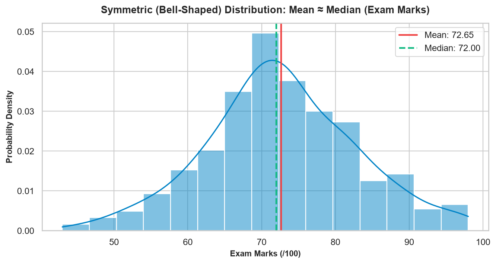
2. Right-Skewed (Positive Skew — Long Tail on Right)
Jab majority data points choti values par pack hote hain, lekin kuch extreme high-value outliers curve ko right side khinchte hain. Isme Mean > Median hota hai (jaise e-commerce order values: Median ₹2,383 vs. Mean ₹8,287, Skewness = +5.031):
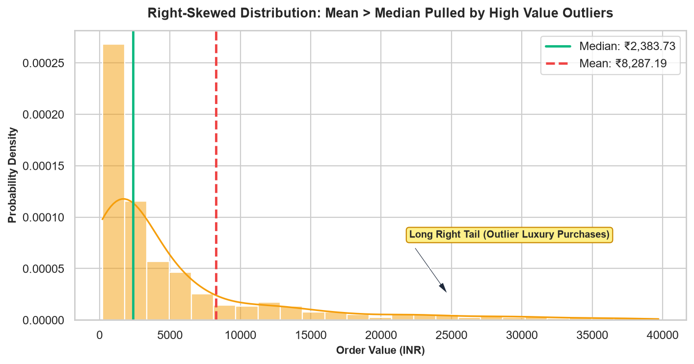
3. Multimodal / Bimodal (Multiple Peaks)
Agar aapke distribution me do alag-alag unche peaks dikh rahe hain, toh iska matlab yeh hai ki aapka dataset ek single uniform group nahi hai — uske andar do distinct sub-populations mix ho chuki hain (jaise Foundational vs. Advanced students):
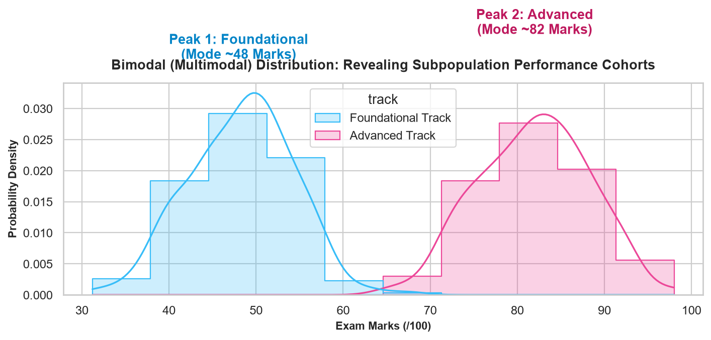
import pandas as pd
df_college = pd.read_csv("scratch/seaborn_topic5_data/college_performance.csv")
df_ecom = pd.read_csv("scratch/seaborn_topic5_data/ecommerce_orders.csv")
print("College Exam Marks Skewness:", round(df_college["exam_marks"].skew(), 3))
print("E-Commerce Order Values Skewness:", round(df_ecom["order_value"].skew(), 3))
print("E-Commerce Mean:", round(df_ecom["order_value"].mean(), 2))
print("E-Commerce Median:", round(df_ecom["order_value"].median(), 2))🚫 12. Discrete, Bounded & Non-Negative Data (Boundary Pitfalls)
Statistical algorithms assume karte hain ki data infinite continuous number line (−∞ to +∞) par exist karta hai. Lekin real world me data Bounded (jaise Exam Marks 0 se 100) ya Discrete (jaise Order Quantity: 1, 2, 3 items) hota hai:
1. Discrete Integer Trap (Fractional Bins)
Agar aap order quantity (1, 2, 3, 4, 5) par default sns.histplot() call karenge, toh Seaborn floating intervals (e.g. 1.4 to 2.2 items) create kar dega jo mathematically meaningless hain! Solution hai discrete=True:
import seaborn as sns
import matplotlib.pyplot as plt
import pandas as pd
df_ecom = pd.read_csv("scratch/seaborn_topic5_data/ecommerce_orders.csv")
sns.set_theme(style="whitegrid")
fig, ax = plt.subplots(figsize=(7, 3.8), dpi=140)
# Centers each bar exactly over integers 1, 2, 3, 4, 5
sns.histplot(data=df_ecom, x="quantity", discrete=True, color="#10b981", edgecolor="#047857", ax=ax)
ax.set_title("Order Quantity Distribution (discrete=True)", fontweight="bold")
ax.set_xlabel("Purchased Units per Order")
ax.set_ylabel("Order Count")
plt.tight_layout()
plt.show()
print("Quantity Value Counts:\n", df_ecom["quantity"].value_counts().sort_index().to_dict())2. KDE Boundary Spillover (The Negative Value Illusion)
Agar aap Exam Marks (0 to 100) ya Order Value (≥ 0) par plain KDE plot karenge, toh Gaussian kernels mathematically boundary ke bahar extend ho jaate hain aur curve par negative marks (e.g. -5.0) ya 105% attendance dikhne lagti hai! Isse prevent karne ke liye clip=(min, max) pass karein:
import seaborn as sns
import matplotlib.pyplot as plt
import pandas as pd
df_college = pd.read_csv("scratch/seaborn_topic5_data/college_performance.csv")
sns.set_theme(style="whitegrid")
fig, axes = plt.subplots(1, 2, figsize=(11, 4), dpi=140)
# Without clip: spills over 100
sns.kdeplot(data=df_college, x="exam_marks", color="#ef4444", ax=axes[0])
axes[0].set_title("Unbounded KDE (Tail spills past 100)")
# With clip: strictly truncated at physical limits
sns.kdeplot(data=df_college, x="exam_marks", color="#10b981", clip=(0.0, 100.0), ax=axes[1])
axes[1].set_title("Bounded KDE: clip=(0, 100)")
plt.tight_layout()
plt.show()🌍 13. Two-Dimensional KDE Contours & Joint Distributions
Jab aap do continuous numerical variables ke beech correlation aur joint density visualize karna chahte hain (jaise Study Hours vs. Exam Marks), toh standard scatter plot dense clusters me heavy overplotting create karta hai jahan hazaron points ek doosre ke upar overlap ho jaate hain. 2D Bivariate KDE is problem ko topographic contour lines ya smooth filled color maps se solve karta hai:
| Parameter | Type & Default | Functionality in 2D Space |
|---|---|---|
x & y |
str |
Two continuous numerical column names. |
fill |
bool = False |
True karne par continuous shaded elevation gradient draw karta hai. |
levels |
int = 10 |
Number of topographic elevation contour layers. |
thresh |
float = 0.05 |
Lowest density threshold jiske bahar background clear rakha jata hai. |
cmap |
str = "Blues" |
Sequential colormap encoding density height. |
import seaborn as sns
import matplotlib.pyplot as plt
import pandas as pd
df_college = pd.read_csv("scratch/seaborn_topic5_data/college_performance.csv")
sns.set_theme(style="white")
fig, ax = plt.subplots(figsize=(7.5, 4.5), dpi=140)
# 2D Bivariate density plot
sns.kdeplot(
data=df_college,
x="study_hours",
y="exam_marks",
cmap="Blues",
fill=True,
thresh=0.05,
levels=8,
ax=ax
)
ax.set_title("2D Bivariate KDE Density: Study Hours vs. Exam Marks", fontweight="bold")
ax.set_xlabel("Weekly Study Hours (hrs)")
ax.set_ylabel("Final Exam Marks (/100)")
sns.despine()
plt.tight_layout()
plt.show()
print("Verified Bivariate Correlation:", round(df_college["study_hours"].corr(df_college["exam_marks"]), 3))🎓 14. Real-Life Case Study A: College Performance Distribution Explorer
Aaiye ek multi-panel academic performance dashboard develop karein jo 500 students ke semester results ke complete distribution profile ko comprehensively summarize kare:
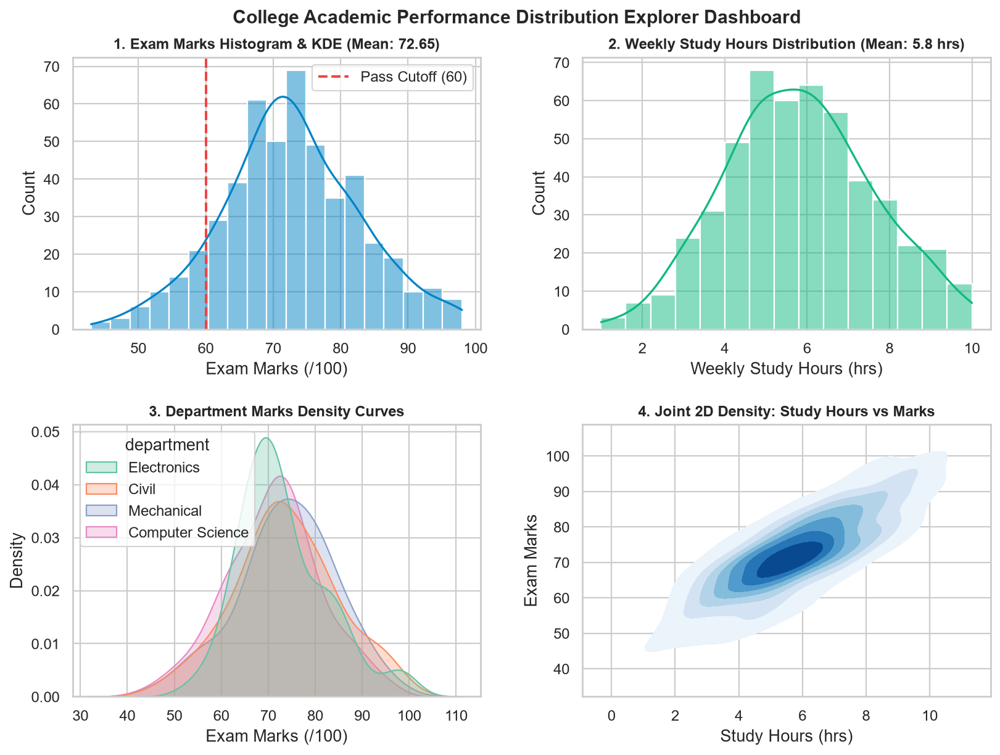
import seaborn as sns
import matplotlib.pyplot as plt
import pandas as pd
df = pd.read_csv("scratch/seaborn_topic5_data/college_performance.csv")
sns.set_theme(style="whitegrid", palette="Set2")
fig, axes = plt.subplots(2, 2, figsize=(12, 8), dpi=160)
# 1. Marks Histogram + KDE Overlay
sns.histplot(df["exam_marks"], kde=True, color="#0284c7", ax=axes[0, 0])
axes[0, 0].axvline(60.0, color="#ef4444", linestyle="--", label="Pass Cutoff (60)")
axes[0, 0].set_title("1. Exam Marks Histogram & KDE (Mean: 72.65)", fontweight="bold")
axes[0, 0].set_xlabel("Exam Marks (/100)")
axes[0, 0].legend()
# 2. Study Hours Distribution
sns.histplot(df["study_hours"], kde=True, color="#10b981", ax=axes[0, 1])
axes[0, 1].set_title("2. Weekly Study Hours Distribution (Mean: 5.8 hrs)", fontweight="bold")
axes[0, 1].set_xlabel("Weekly Study Hours (hrs)")
# 3. Department KDE Curves
sns.kdeplot(data=df, x="exam_marks", hue="department", palette="Set2", fill=True, common_norm=False, alpha=0.3, ax=axes[1, 0])
axes[1, 0].set_title("3. Department Marks Density Curves", fontweight="bold")
axes[1, 0].set_xlabel("Exam Marks (/100)")
# 4. Joint 2D Density
sns.kdeplot(data=df, x="study_hours", y="exam_marks", cmap="Blues", fill=True, thresh=0.05, levels=8, ax=axes[1, 1])
axes[1, 1].set_title("4. Joint 2D Density: Study Hours vs Marks", fontweight="bold")
axes[1, 1].set_xlabel("Study Hours (hrs)")
axes[1, 1].set_ylabel("Exam Marks")
fig.suptitle("College Academic Performance Distribution Explorer Dashboard", fontsize=13.5, fontweight="bold")
plt.subplots_adjust(top=0.92, hspace=0.35, wspace=0.25)
plt.savefig("scratch/case_study_college_dashboard.png", dpi=160, bbox_inches="tight")
plt.show()
print("Verified College Case Study generated successfully.")🛒 15. Real-Life Case Study B: E-Commerce Order Value Explorer
Retail sales data me heavy positive skewness hoti hai. Aaiye dekhein ki kaise raw distribution, log-transformed normalization, aur discrete purchase quantities ko analyze kiya jata hai:
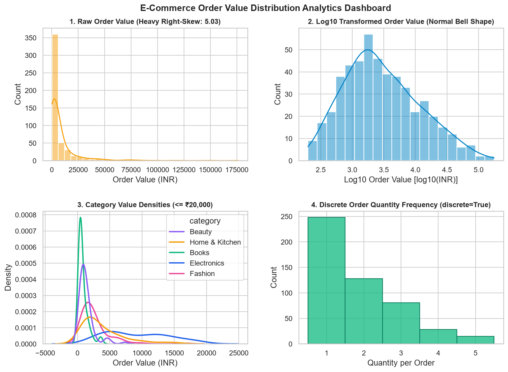
import seaborn as sns
import matplotlib.pyplot as plt
import numpy as np
import pandas as pd
df_ecom = pd.read_csv("scratch/seaborn_topic5_data/ecommerce_orders.csv")
sns.set_theme(style="whitegrid")
fig, axes = plt.subplots(2, 2, figsize=(12.5, 8.2), dpi=160)
# 1. Raw Order Value (Heavy Right-Skew: 5.03)
sns.histplot(df_ecom["order_value"], kde=True, color="#f59e0b", bins=30, ax=axes[0, 0])
axes[0, 0].set_title("1. Raw Order Value (Heavy Right-Skew: 5.03)", fontweight="bold")
axes[0, 0].set_xlabel("Order Value (INR)")
# 2. Log10 Transformed to normalize
sns.histplot(np.log10(df_ecom["order_value"]), kde=True, color="#0284c7", bins=20, ax=axes[0, 1])
axes[0, 1].set_title("2. Log10 Transformed Order Value (Normal Bell Shape)", fontweight="bold")
axes[0, 1].set_xlabel("Log10 Order Value [log10(INR)]")
# 3. Category Value Densities
cat_colors = {"Electronics": "#2563eb", "Home & Kitchen": "#f59e0b", "Fashion": "#ec4899", "Beauty": "#8b5cf6", "Books": "#10b981"}
sns.kdeplot(
data=df_ecom[df_ecom["order_value"] <= 20000], x="order_value", hue="category",
palette=cat_colors, fill=False, common_norm=False, linewidth=2, ax=axes[1, 0]
)
axes[1, 0].set_title("3. Category Value Densities (≤ ₹20,000)", fontweight="bold")
axes[1, 0].set_xlabel("Order Value (INR)")
# 4. Discrete Order Quantity Frequency
sns.histplot(data=df_ecom, x="quantity", discrete=True, color="#10b981", edgecolor="#047857", ax=axes[1, 1])
axes[1, 1].set_title("4. Discrete Order Quantity Frequency (discrete=True)", fontweight="bold")
axes[1, 1].set_xlabel("Quantity per Order")
fig.suptitle("E-Commerce Order Value Distribution Analytics Dashboard", fontsize=13.5, fontweight="bold")
plt.subplots_adjust(top=0.92, hspace=0.38, wspace=0.25)
plt.savefig("scratch/case_study_ecommerce_dashboard.png", dpi=160, bbox_inches="tight")
plt.show()
print("Total Order Value Verified:", df_ecom["order_value"].sum())🚧 16. Common Pitfalls & Debugging Guide
Distribution visualization me statistical aur visual traps bahut aam hote hain. Ek choti si parameter mistake poore dataset ke conclusion ko invert kar sakti hai! Yahan distribution analysis ke 16 sabse critical pitfalls, unke piche ka mathematical reason, aur copy-paste ready fixes diye gaye hain:
| Pitfall / Trap | Kyun Hota Hai? (Root Cause) | Recommended Fix & Code Solution |
|---|---|---|
| 1. Over-smoothing in KDE | bw_adjust ko bahut bada set karne se algorithm distinct modes (e.g. Bimodal exam cohorts 48 & 82 marks) ko merge karke single unimodal curve bana deta hai. |
Default bw_adjust=1.0 use karein ya multi-modal datasets me bw_adjust=0.5 se 0.7 par test karein:sns.kdeplot(data=df, x="marks", bw_adjust=0.6) |
| 2. Under-smoothing / Wiggly KDE | bw_adjust ko bahut chota (e.g. 0.15) rakhne se KDE random sampling noise ko real distribution peaks samajh leta hai. |
Bandwidth adjust ko 0.5 se kam na karein unless aapke paas huge dataset (> 10,000 rows) ho:sns.kdeplot(data=df, x="marks", bw_adjust=1.0) |
| 3. Physically Impossible Negative Spillover | Gaussian kernels infinite bounds assume karte hain. Zero-bounded data (jaise marks ≥ 0 ya order values ≥ 0) par KDE curve negative axis me bleed ho jata hai. | cut=0 lagayein taaki curve data ke min/max par stop ho jaye, ya clip=(min, max) specify karein:sns.kdeplot(df["marks"], cut=0, clip=(0, 100)) |
| 4. Comparing Raw Counts with Unequal Groups | Agar Boys group me 400 students aur Girls group me 100 students hain, toh default stat="count" me Boys ka graph hamesha bada dikhega chahe percentage distribution identical ho. |
Hamesha stat="density" ya stat="probability" use karein aur common_norm=False set karein:sns.histplot(df, x="marks", hue="gender", stat="probability", common_norm=False) |
| 5. Too Few Bins (Oversimplification) | bins=4 ya 5 set karne se rich bimodal ya skewed data flat rectangular block jaisa dikhta hai, details hide ho jaati hain. |
Freedman-Diaconis rule use karein ya bins="auto" / explicit binwidth specify karein:sns.histplot(df, x="marks", bins="auto") |
| 6. Too Many Bins (Comb / Spiky Noise) | 500 rows ke dataset me bins=100 set karne se har bin me sirf 0 ya 1 value aati hai, jisse spiky jagged comb pattern banta hai. |
Sturges formula rule of thumb follow karein (k ≈ log2(n) + 1 ≈ 10–25 bins for 500 points):sns.histplot(df, x="marks", bins=20) |
| 7. Bar Occlusion in Multi-Hue Histograms | Default multiple="layer" me aage wala solid bar piche wale group ke bars ko poori tarah hide kar deta hai. |
multiple="dodge" (side-by-side) ya element="step", fill=False use karein:sns.histplot(df, x="marks", hue="dept", multiple="dodge") |
| 8. KDE Y-Axis Misinterpretation (> 1.0) | Users sochte hain ki Y-axis probability percentage hai, aur agar value 0.035 aaye toh confuse ho jaate hain. Y-axis Probability Density hai (P = Area = Height × Width). | Y-axis labels ko clearly Probability Density mark karein aur curve ke area ko 1.0 samjhein:ax.set_ylabel("Probability Density f(x)") |
| 9. Discrete Integer Fraction Trap | Feedback rating (1 to 5) par continuous histogram lagane se bins [1.4 to 2.2] ban jaate hain jo customer review context me invalid hain. | discrete=True add karein taaki bars exactly whole integers par center hon:sns.histplot(df, x="rating", discrete=True) |
| 10. Squashed Skewed Data Bars | E-commerce order values me extreme luxury orders (₹65,000) hone se default linear scale me 95% data pehle bin me squash ho jata hai. | log_scale=True enable karein ya log10 transform karke plot karein:sns.histplot(df, x="order_val", log_scale=True, kde=True) |
| 11. Confusing percent vs probability | stat="percent" me bar heights ka sum 100% hota hai; stat="probability" me sum 1.0 hota hai. Dono ko mix karne se labels misleading ho jaate hain. |
Explicit units use karein: Percentage ke liye Y-axis par % symbol aur probability ke liye [0.0 - 1.0]. |
| 12. Bivariate KDE Contours Invisible | sns.kdeplot(x=x, y=y) call karte waqt default thresh=0.05 ke kaaran low-density contours hide ho jaate hain ya background me fade ho jaate hain. |
levels=10, thresh=0.02 aur cmap="viridis" ya fill=True specify karein:sns.kdeplot(df, x="hrs", y="marks", fill=True, levels=10, thresh=0.02) |
| 13. Missing / NaN Values Breaking Calculations | Pandas column me null values hone se summary stats ya skewness calculations me NaN propagate ho jata hai. | Plot karne se pehle .dropna() karein ya explicit subset pass karein:sns.histplot(df["marks"].dropna(), kde=True) |
| 14. Using Deprecated sns.distplot() | Internet par purane tutorials me sns.distplot() dikhta hai jo Seaborn 0.11 me deprecate ho chuka tha aur Seaborn 0.14+ me remove ho gaya hai. |
Hamesha modern modular functions use karein: sns.histplot(), sns.kdeplot(), ya sns.displot(). |
| 15. Forgetting Dual Axis on kde=True | sns.histplot(x, kde=True, stat="count") me KDE curve counts ke scale par overlay hota hai. Users confuse hote hain ki KDE density kaise count se match kar rahi hai. |
Samjhein ki Seaborn automatically KDE curve ko count units me re-scale kar deta hai visual alignment ke liye. |
| 16. Crowded Multi-Category KDEs | 5 se zyada categories par solid fill=True KDEs overlay karne se graph completely illegible mess ban jata hai. |
5+ categories ke liye fill=False, linewidth=2 use karein ya sns.displot(col="category") se subplots banayein. |
📋 17. Quick Reference: Histograms & KDE Cheat Sheet
Yeh comprehensive cheat sheet distribution visualization ke sabhi common tasks, unke optimal Seaborn functions, critical parameters, aur production validation checks ko summarize karti hai:
| Data Goal | Function | Key Parameters | Use-Case Example | Quality Assertion |
|---|---|---|---|---|
| Basic Frequency Check | sns.histplot() |
x="col", bins=20, kde=False |
Check exam marks count distribution | Bars touch correctly, no gaps if continuous |
| Smooth Curve Estimation | sns.kdeplot() |
x="col", fill=True, bw_adjust=1.0, cut=0 |
Estimate student score probability density | Area under curve integrates exactly to 1.0 |
| Combined Shape & Freq | sns.histplot() |
x="col", kde=True, bins=25, alpha=0.6 |
Analyze skewness while seeing actual data counts | KDE tracks bar tops faithfully without overfitting |
| Discrete Integer Data | sns.histplot() |
x="col", discrete=True, shrink=0.85 |
Customer satisfaction ratings (1 to 5 stars) | Each bar centered strictly over integer ticks |
| Heavy Skewed Data | sns.histplot() |
x="col", log_scale=True, kde=True |
E-commerce order amounts, website session durations | Transforms log-normal tail into readable bell shape |
| Normalized Group Compare | sns.histplot() |
x="col", hue="grp", stat="probability", common_norm=False |
Compare test scores between CSE and Mechanical depts | Each group's bar heights independently sum to 1.0 |
| Bivariate Density | sns.kdeplot() |
x="col1", y="col2", levels=8, thresh=0.05, cmap="mako" |
Study hours vs Exam performance density clusters | Smooth concentric contour rings identifying joint mode |
Production Distribution Profiler Function
Aap is reusable Python function ko kisi bhi tabular dataset par run karke distribution ka deep automated statistical & visual profile generate kar sakte hain:
import numpy as np
import pandas as pd
import matplotlib.pyplot as plt
import seaborn as sns
def plot_distribution_profile(df, column, title=None, bins="auto", clip_range=None):
"""
Generates a production-grade distribution analysis plot with automated skewness detection,
mean/median markers, and boundary clipping.
"""
sns.set_theme(style="whitegrid")
series = df[column].dropna()
mean_val = series.mean()
median_val = series.median()
skew_val = series.skew()
fig, ax = plt.subplots(figsize=(8.5, 4.5), dpi=140)
# Automated log-scale suggestion for heavy skew
use_log = True if skew_val > 3.0 and (series > 0).all() else False
sns.histplot(
data=df, x=column, kde=True, bins=bins, log_scale=use_log,
color="#0284c7", edgecolor="#0369a1", alpha=0.65, ax=ax
)
# Add Mean & Median lines if not log-scaled
if not use_log:
ax.axvline(mean_val, color="#dc2626", linestyle="--", linewidth=2, label=f"Mean: {mean_val:.2f}")
ax.axvline(median_val, color="#10b981", linestyle="-", linewidth=2, label=f"Median: {median_val:.2f}")
ax.legend(loc="upper right", frameon=True)
plot_title = title if title else f"Distribution Profile: {column}"
ax.set_title(f"{plot_title} (Skewness: {skew_val:.2f})", fontsize=12.5, fontweight="bold")
ax.set_ylabel("Record Count")
plt.tight_layout()
return fig, ax💪 18. Practice Questions & Conceptual Exercises
Neeche diye gaye 20 conceptual questions, analytical challenges, aur debugging problems ko solve karke apna distribution visualization concept test karein. Har question ke solution ko dekhne ke liye accordion par click karein:
Q01: Frequency Count aur Probability Density me kya fundamental difference hai?
Answer:
- Frequency Count (
stat="count"): Kisi bin ke andar aane wale actual data records ki absolute ginti hoti hai (e.g. 85 students scoring between 70 and 80 marks). Bars ki heights ka sum total sample size (N) ke barabar hota hai. - Probability Density (
stat="density"): Bar height D = ni / (N × binwidth) hoti hai. Yahan individual bar height 1 se zyada ho sakti hai, lekin sabhi bars ka Total Integrated Area (∑ Height × Width) hamesha strictly 1.0 ke barabar hota hai.
Q02: KDE curve zero se kam (negative marks ya negative prices) kyun chali jaati hai aur ise kaise rokain?
Answer:
KDE har observation par ek mathematical Gaussian (Normal) bell curve place karta hai, jo theoretical −∞ se +∞ tak extend hoti hai. Jab observations 0 ke paas hoti hain, toh Gaussian curve ke tails negative side spill over ho jaate hain.
Solution: Seaborn me cut=0 pass karein (jo estimation ko data ke minimum aur maximum par strictly truncate kar deta hai) ya explicit clip=(0, None) set karein:
sns.kdeplot(df["marks"], cut=0, clip=(0, 100))
Q03: kdeplot() me bw_adjust parameter badhane ya ghatane se curve par kya asar padta hai?
Answer:
bw_adjust < 1.0(e.g.0.3): Bandwidth shrink ho jaati hai — curve extremely sensitive ho kar har sample point ke paas spiky ho jaati hai (Under-smoothing / Overfitting).bw_adjust > 1.0(e.g.2.0): Bandwidth expand ho jaati hai — curve over-smooth ho jaati hai, jisse bimodal peaks merge hokar single broad bell curve ban jaati hain (Over-smoothing / Underfitting).- Default
bw_adjust=1.0Scott's / Silverman's optimal rule use karta hai.
Q04: Histogram kab KDE plot se better choice hota hai?
Answer:
- Jab sample size bahut chota ho (N < 30), kyunki KDE chote data me false smooth modes hallucinate kar sakta hai.
- Jab audience non-technical ho jise Probability Density samajhna mushkil lage aur unhe simple raw headcounts dekhni hon.
- Jab data discrete integers ho (jaise product ratings 1, 2, 3, 4, 5) jahan
discrete=Truehistogram exact count dikhata hai.
Q05: Heavily right-skewed data me Mean ke muqable Median better central measure kyun hota hai?
Answer:
Right-skewed data (jaise E-commerce orders ya income) me extreme high-value outliers (₹65,000 orders) hote hain. Mean in extreme values ki wajah se right side pull ho jata hai (Verified mean: ₹8,287.19), jabki median 50th percentile par stable rehta hai (Verified median: ₹2,383.73). Isliye median aam customer ka representative spending reflect karta hai.
Q06: stat="density" me peak bar height 1.0 se badi ho sakti hai? Explain karein.
Answer:
Haan, bilkul! Density probability nahi hoti, balki Probability per Unit Width hoti hai (D = P / Δx). Agar data bahut narrow range me tightly clustered ho (e.g. binwidth = 0.05 units), toh D = 0.40 / 0.05 = 8.0 ho sakti hai! Essential rule yeh hai ki ∫ D(x) dx = 1.0, na ki D(x) ≤ 1.0.
Q07: Multi-group KDE plot me common_norm=False ka kya role hai?
Answer:
Default common_norm=True me Seaborn sabhi groups ke areas ka sum milakar 1.0 banata hai. Agar Group A me 900 records aur Group B me 100 records hon, toh Group B ka curve microscopic flat line ban jayega! Jab aap common_norm=False lagate hain, toh har group ka individual area 1.0 normalize hota hai, jisse unki internal distribution shapes directly compare ki ja sakti hain.
Q08: sns.histplot() me multiple="dodge" aur multiple="stack" me kya antar hai?
Answer:
multiple="dodge": Groups ke bars ko side-by-side place karta hai. Yeh groups ke beech head-to-head comparison ke liye best hai.multiple="stack": Bars ko ek doosre ke upar stack karta hai. Yeh total aggregate volume aur uske composition breakdown ko simultaneously dekhne ke liye best hai.
Q09: discrete=True parameter ka use kab aur kyun kiya jata hai?
Answer:
Jab column me integer discrete values hon (e.g. order quantity: 1, 2, 3, 4, 5 ya star ratings 1 to 5). Continuous binning floating edges (jaise 1.5 - 2.5) draw karti hai jo misleading hoti hain. discrete=True har bar ko exact whole integer value par center aur align karta hai.
Q10: Histogram aur KDE se Bimodal distribution ko kaise diagnose karein?
Answer:
Bimodal distribution me data do alag-alag populations ya sub-cohorts ka combination hota hai. Graph me do distinct peaks (modes) aur unke beech ek trough (valley) dikhai deti hai (jaise hamare bimodal exam data me 48 marks aur 82 marks par peaks hain). Histogram me sufficient bins (e.g. 20 bins) aur KDE me bw_adjust=0.6 se dono modes crystal clear nazar aate hain.
Q11: Practical Coding Challenge — Skewed Order Values ke liye Log-Scale Histogram banayein.
Problem: df_ecom dataframe ke order_value column ko log-scale aur KDE ke sath plot karein.
import seaborn as sns
import matplotlib.pyplot as plt
fig, ax = plt.subplots(figsize=(8, 4))
sns.histplot(data=df_ecom, x="order_value", log_scale=True, kde=True, color="#0284c7", ax=ax)
ax.set_title("Log-Scaled Order Value Distribution", fontweight="bold")
ax.set_xlabel("Order Value (INR, Log10 Scale)")
plt.show()Q12: Practical Coding Challenge — Histogram par Mean aur Median ki reference lines add karein.
Problem: Exam marks histogram par Red dashed line se Mean aur Green solid line se Median draw karein.
mean_m = df_college["exam_marks"].mean()
median_m = df_college["exam_marks"].median()
fig, ax = plt.subplots(figsize=(8, 4))
sns.histplot(data=df_college, x="exam_marks", kde=True, color="#4f46e5", ax=ax)
ax.axvline(mean_m, color="red", linestyle="--", linewidth=2, label=f"Mean ({mean_m:.1f})")
ax.axvline(median_m, color="green", linestyle="-", linewidth=2, label=f"Median ({median_m:.1f})")
ax.legend()
plt.show()Q13: Practical Coding Challenge — 2D Bivariate KDE Contours plot karein.
Problem: study_hours aur exam_marks ke beech joint continuous probability contours plot karein.
fig, ax = plt.subplots(figsize=(7, 5))
sns.kdeplot(
data=df_college, x="study_hours", y="exam_marks",
fill=True, levels=8, thresh=0.05, cmap="Blues", ax=ax
)
ax.set_title("Bivariate KDE: Study Hours vs. Exam Marks", fontweight="bold")
plt.show()Q14: Multiple Choice — KDE curve ki smoothness ko adjust karne ke liye kaunsa parameter use hota hai?
Question: Which parameter controls the kernel bandwidth multiplier in sns.kdeplot()?
- A)
bins - B)
bw_adjust— Correct! - C)
smooth_level - D)
kernel_size
Explanation: bw_adjust bandwidth ka factor multiplier hota hai. bw_adjust=0.5 half bandwidth (more rough) aur bw_adjust=2.0 double bandwidth (more smooth) deta hai.
Q15: Multiple Choice — Kis stat parameter se bar heights ka total sum 100% hota hai?
Question: Which stat option scales histogram bars such that their sum equals 100?
- A)
stat="count" - B)
stat="density" - C)
stat="percent"— Correct! - D)
stat="frequency"
Explanation: stat="percent" sabhi bar heights ko normalize karta hai taaki ∑ hi = 100%. stat="probability" me sum 1.0 hota hai.
Q16: Multiple Choice — Seaborn 0.11+ me deprecated sns.distplot() ka modern replacement kaunsa hai?
Question: Which modern function replaces the old sns.distplot()?
- A)
sns.distribution() - B)
sns.histplot()&sns.displot()— Correct! - C)
sns.freqplot() - D)
sns.normplot()
Explanation: sns.distplot ko Seaborn 0.11 me deprecate kiya gaya aur 0.14+ me remove kar diya gaya. Modern code me sns.histplot() (Axes-level) ya sns.displot() (Figure-level) use hota hai.
Q17: Multiple Choice — sns.histplot() me element="step" ka kya effect hota hai?
Question: What does element="step" do in a histogram?
- A) Bars ko 3D steps me render karta hai.
- B) Solid filled rectangles ki jagah sirf outline staircase line render karta hai. — Correct!
- C) Step-by-step animation banata hai.
- D) Sirf odd-numbered bins draw karta hai.
Explanation: element="step" outline staircase draw karta hai jo multiple overlapping groups ko compare karte waqt bar occlusion se bachata hai.
Q18: Multiple Choice — KDE curve ko boundaries ke bahar spill hone se rokne ke liye kaunsa parameter lagate hain?
Question: Which parameter stops the KDE evaluation at physical data limits?
- A)
stop_at_edges=True - B)
cut=0yaclip=(min, max)— Correct! - C)
limit_tails=True - D)
bounded=True
Explanation: cut=0 evaluation grid ko data ke actual minimum aur maximum par restrict karta hai, jisse negative marks ya negative prices graph par nahi aate.
Q19: Debugging Exercise — Negative Customer Ages in KDE
Buggy Code:
# Bug: KDE curve shows probability for age = -5 to 0 years!
sns.kdeplot(df_customers["age"], fill=True)Problem: Gaussian smoothing tails negative age tak expand ho rahi hain.
Fixed Code:
# Fix: Enforce minimum boundary at 0 years
sns.kdeplot(df_customers["age"], fill=True, cut=0, clip=(0, None))Q20: Debugging Exercise — Complete Bar Occlusion in Multi-Hue Histogram
Buggy Code:
# Bug: Group 2 completely hides Group 1 bars behind it!
sns.histplot(data=df, x="marks", hue="gender")Problem: Default multiple="layer" me opaque bars piche wale data ko block kar dete hain.
Fixed Code:
# Fix: Use dodge (side-by-side) or element="step"
sns.histplot(data=df, x="marks", hue="gender", multiple="dodge", shrink=0.85)🕵 19. Capstone Mini-Project: Distribution Detective (Question 21)
Aapko college academic data aur e-commerce order values ka automated distribution audit conduct karna hai. Yeh end-to-end task student score symmetry aur e-commerce right-skewness ko mathematically aur visually reconcile karega:
Q21 Capstone Project: End-to-End Distribution Detective Pipeline
Mission Objectives:
- Load both
college_performance.csvandecommerce_orders.csv. - Compute statistical moments: Mean, Median, Std Dev, and Skewness.
- Plot a professional 2-panel comparative dashboard:
- Panel 1: College Marks histogram + KDE + Mean/Median markers.
- Panel 2: E-Commerce Order Value log10-scaled histogram + KDE.
- Print executive audit summary proving symmetry vs. heavy skew.
import numpy as np
import pandas as pd
import matplotlib.pyplot as plt
import seaborn as sns
# 1. Load Datasets
df_college = pd.read_csv("scratch/seaborn_topic5_data/college_performance.csv")
df_ecom = pd.read_csv("scratch/seaborn_topic5_data/ecommerce_orders.csv")
# 2. Compute Statistics
c_mean = df_college["exam_marks"].mean()
c_median = df_college["exam_marks"].median()
c_skew = df_college["exam_marks"].skew()
e_mean = df_ecom["order_value"].mean()
e_median = df_ecom["order_value"].median()
e_skew = df_ecom["order_value"].skew()
# 3. Create Comparative Figure
sns.set_theme(style="whitegrid")
fig, axes = plt.subplots(1, 2, figsize=(12, 4.8), dpi=140)
# Panel 1: Symmetric College Performance
sns.histplot(
data=df_college, x="exam_marks", kde=True, bins=20,
color="#4f46e5", edgecolor="#312e81", alpha=0.6, ax=axes[0]
)
axes[0].axvline(c_mean, color="#dc2626", linestyle="--", linewidth=2, label=f"Mean: {c_mean:.2f}")
axes[0].axvline(c_median, color="#10b981", linestyle="-", linewidth=2, label=f"Median: {c_median:.2f}")
axes[0].set_title(f"College Marks: Symmetric Bell Curve\n(Skewness: {c_skew:.3f} ~ Normal)", fontweight="bold")
axes[0].set_xlabel("Exam Marks (0 to 100)")
axes[0].set_ylabel("Student Count")
axes[0].legend(loc="upper right")
# Panel 2: Log10 Normalized E-Commerce Orders
sns.histplot(
data=df_ecom, x="order_value", log_scale=True, kde=True, bins=25,
color="#0284c7", edgecolor="#0369a1", alpha=0.65, ax=axes[1]
)
axes[1].set_title(f"E-Commerce Orders: Log10 Normalization\n(Raw Skewness: {e_skew:.2f} > 3.0)", fontweight="bold")
axes[1].set_xlabel("Order Value (INR, Log Scale)")
axes[1].set_ylabel("Order Count")
plt.tight_layout()
plt.savefig("scratch/capstone_distribution_detective.png", dpi=160)
plt.show()
# 4. Print Executive Output
print("=== DISTRIBUTION DETECTIVE EXECUTIVE AUDIT ===")
print(f"College Marks - Mean: {c_mean:.2f}, Median: {c_median:.2f}, Skewness: {c_skew:.3f} -> Symmetric Normal")
print(f"E-Commerce Val - Mean: INR {e_mean:.2f}, Median: INR {e_median:.2f}, Skewness: {e_skew:.3f} -> Extreme Right-Skew")🏁 20. Summary & What's Next
Congratulations! Aapne Seaborn distribution visualization ke dono sabse powerful pillars — Histograms (histplot) aur Kernel Density Estimation (kdeplot) — par complete practical aur theoretical mastery achieve kar li hai.
6 Golden Rules of Distribution Visualization
| Rule # | Core Principle | Actionable Rule of Thumb |
|---|---|---|
| 1 | Always check Skewness first | Agar skewness > 2.0 ho, linear histogram sab kuch pehle bin me squash kar dega. Hamesha log_scale=True use karein. |
| 2 | Mean vs. Median alignment | Symmetric data me Mean ≈ Median hota hai. Right-skewed me Mean > Median hota hai. Hamesha dono lines draw karke verify karein. |
| 3 | Tune bins intentionally | Default bins par blindly rely na karein. Test k ≈ log2(n) + 1 ya binwidth specify karein taaki hidden bimodal peaks reveal hon. |
| 4 | Guard physical boundaries | Non-negative data par cut=0 ya clip=(min, max) lagayein taaki KDE impossible values estimate na kare. |
| 5 | Normalize unequal groups | Unequal sample sizes ko compare karte waqt stat="density" ya stat="probability" aur common_norm=False lagayein. |
| 6 | Honor discrete nature | Integer counts aur discrete ratings par discrete=True use karein taaki fractional binning artifacts create na hon. |
Ab tak humne continuous numerical variables ki distribution dekhi. Topic 6 me hum explore karenge Categorical Visualizations: sns.countplot(), sns.barplot(), sns.boxplot(), aur sns.violinplot() — jahan category-wise comparisons, interquartile ranges (IQR), aur distributions ka direct combination seekhenge!